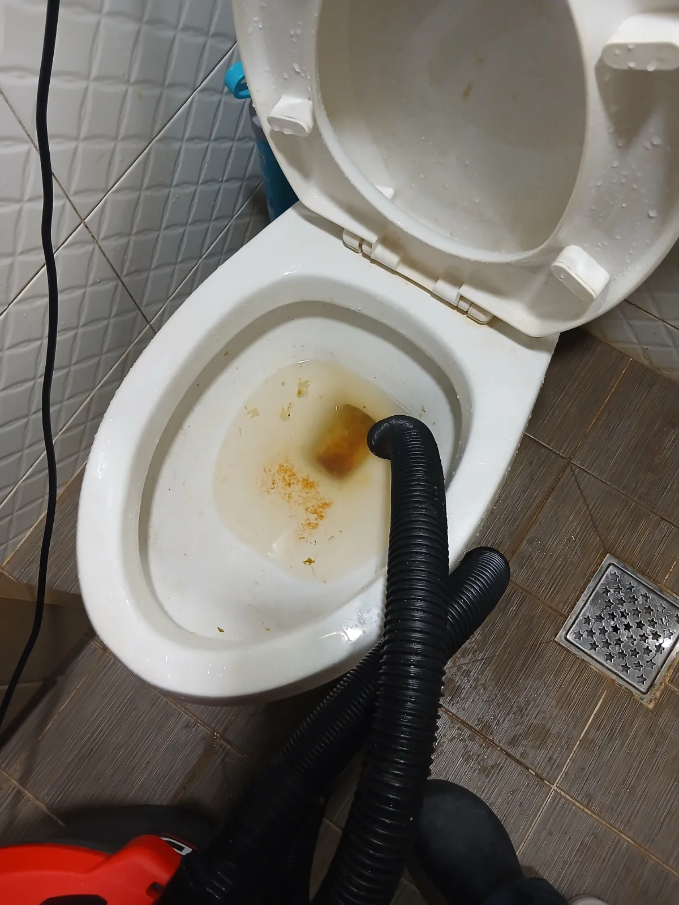
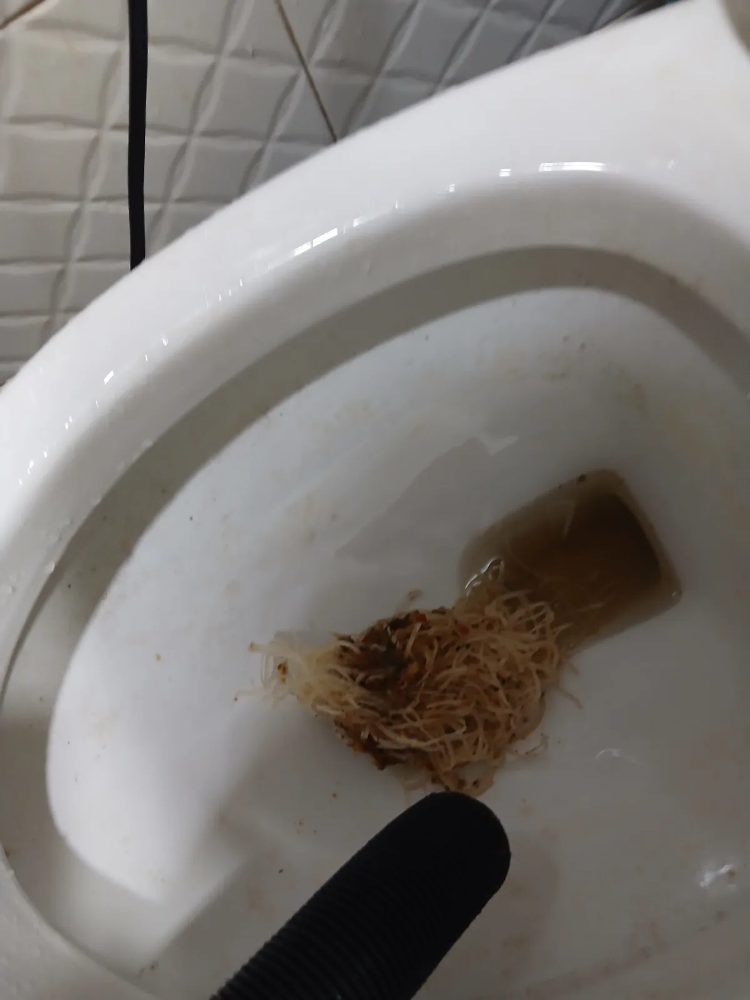

수원시 권선구 세류동 변기막힘, 현장 도착 후 진단
수원시 권선구 세류동에서 변기가 막혀 사용하기 어렵다는 요청을 받고 필요한 장비를 준비해 현장으로 출동했습니다.
처음 전달받은 내용은 물티슈로 인한 변기막힘이 의심되는 상황이었습니다. 하지만 변기막힘은 고객님의 설명만으로 원인을 단정하기보다 실제 작업 과정에서 어떤 이물질이 확인되는지 살펴보는 것이 중요합니다.
현장 상태를 확인한 뒤 이번에는 변기를 바로 탈거하거나 불필요하게 작업 범위를 확대하지 않고, 먼저 전문 석션 장비를 이용해 내부 이물질을 직접 회수하는 방법을 선택했습니다.
신라건축설비는 처음부터 큰 작업을 일률적으로 진행하지 않습니다. 현장 상태를 먼저 확인하고 필요한 작업 범위와 방법, 비용에 영향을 주는 요소를 설명한 뒤 실제 필요한 범위에서 작업하는 것을 중요하게 생각합니다.
1단계: 증상 확인과 필요한 장비 작업
변기 내부에 전문 석션 장비의 흡입 호스를 투입해 막힘을 일으킨 이물질을 회수했습니다.
작업을 진행하자 처음 예상했던 물티슈뿐 아니라 숙주를 포함한 음식물 이물질이 함께 나오기 시작했습니다. 실제로 회수된 이물질을 확인해보니 물티슈와 음식물이 뒤엉켜 하나의 덩어리처럼 형성돼 있었습니다.
이번 세류동 변기막힘 사례처럼 고객님이 기억하고 있는 투입물과 실제 배관 내부에서 발견되는 이물질이 다를 수도 있습니다. 따라서 막힘 작업은 추측에 의존하기보다 현장에서 실제 원인을 확인하면서 적합한 공법을 선택하는 것이 중요합니다.

2단계: 원인 구간 처리와 정상 작동 확인
이번 현장에서는 변기탈거까지 작업 범위를 확대하지 않고 석션을 이용해 물티슈와 숙주 등 음식물 이물질을 밖으로 회수하는 방식으로 진행했습니다.
단순히 이물질을 안쪽으로 밀어 물길만 일시적으로 만드는 것이 아니라, 확인되는 이물질을 외부로 회수해 막힘 원인을 제거하는 데 집중했습니다.
특히 이번 현장은 현재의 막힘을 해결하는 것만큼 재발 방지가 중요했습니다. 물티슈와 음식물을 변기에 버리는 사용 습관이 반복된다면 비슷한 변기막힘이 다시 발생할 가능성이 있기 때문에 작업 후 올바른 변기 사용 방법을 함께 안내했습니다.

작업 결과와 재발 방지 안내
수원시 권선구 세류동 변기막힘 현장은 전문 석션 장비를 이용해 물티슈와 숙주를 포함한 음식물 이물질을 직접 회수하는 방식으로 처리했습니다.
변기는 음식물을 처리하는 배수구가 아닙니다. 특히 숙주처럼 길고 가느다란 섬유질 형태의 음식물과 물에 풀리지 않는 물티슈가 함께 들어가면 서로 엉키면서 덩어리를 만들 수 있고, 변기 내부의 굴곡진 통수 구간에서 배수 흐름을 방해할 수 있습니다.
재발 방지를 위해 변기에는 배설물과 적정량의 화장지 외에 물티슈, 청소포, 음식물 등 물에 쉽게 풀리지 않는 이물질을 넣지 않는 것이 좋다고 안내드렸습니다. 작은 양이라도 반복적으로 투입하면 내부에 남은 이물질과 엉키면서 다시 막힘을 만들 수 있습니다.
신라건축설비는 단순히 변기를 뚫고 현장을 떠나는 데 그치지 않고 실제로 어떤 원인 때문에 막혔는지 확인하고, 같은 문제가 반복되지 않도록 현장 상황에 맞는 관리 방법도 함께 안내하고 있습니다.
작업 후 시공 부위와 관련해 이상 증상이 나타날 경우 기존 작업 내용을 바탕으로 상태를 확인하고 필요한 사후 대응을 진행합니다.
신라건축설비는 변기막힘·싱크대막힘·하수구막힘을 전문적으로 해결하며 수원시 권선구 세류동을 비롯한 경기권과 서울 전 지역에 출동하고 있습니다. 긴급한 막힘 요청에 대응할 수 있도록 24시간 출동 체계를 운영하고 있으며, 현장 원인과 배관 상태를 확인한 뒤 필요한 장비와 작업 방법을 선택합니다.
이번 현장에서는 석션 장비만으로 필요한 작업을 진행했지만, 다른 막힘 현장에서는 원인에 따라 배관 내시경검사, 관통, RIDGID 샤프트, 고압세척 등 전문 장비와 공법을 선택해 대응합니다. 점검 과정에서 공용배관이나 오수관 등 더 큰 문제가 확인될 경우 배관 보수·교체 및 대형 배관공사까지 연계해 자체 대응할 수 있습니다.
최종 조치: 변기 내부에 석션 호스를 투입해 물티슈와 숙주 등 음식물 이물질을 밖으로 직접 회수했습니다. 이번 현장은 변기를 탈거하지 않고 석션 작업으로 막힘 원인을 제거했으며, 작업 후에는 반복적인 이물질 투입으로 재발하지 않도록 변기 사용 시 주의사항과 예방법을 안내했습니다.
현장 방문 전 확인하는 비용과 작업 범위
신라건축설비는 현장 증상과 배관 구조를 확인한 뒤 필요한 작업과 예상 비용을 안내합니다. 단순 관통으로 해결되는지, 배관내시경·석션·고압세척 또는 변기 탈거가 필요한지는 현장 상태에 따라 달라집니다. 출장비와 야간 작업비, 추가 장비 비용이 발생할 수 있는 경우 작업 전에 먼저 설명하고 동의를 받은 범위에서 진행합니다.
업체를 선택할 때 확인할 사항
무조건적인 ‘0원’ 표현보다 실제 작업 범위, 추가 비용 조건, 사용 장비와 사후 대응 기준을 확인하는 것이 중요합니다. 해결되지 않았을 때의 비용 기준과 작업 후 동일 증상 발생 시 점검 범위를 사전에 문의해두면 불필요한 분쟁을 줄일 수 있습니다.
수원시 권선구 변기막힘 자주 묻는 질문
변기막힘은 왜 반복되나요?
수원시 권선구 세류동 현장처럼 변기가 막혀 물이 정상적으로 내려가지 않는 증상으로 작업을 요청하셨습니다. 고객님께서는 변기에 물티슈가 들어간 적이 있다고 설명해주셨고, 현장 상태를 확인한 뒤 이물질을 직접 회수할 수 있는 석션 작업을 진행했습니다. 증상은 원인이 현장마다 다를 수 있습니다. 변기 내부 이물질뿐 아니라 하부 오수관 막힘이나 배관 상태 때문에 반복될 수 있습니다. 같은 변기막힘이 재발하면 막힌 위치와 원인을 다시 확인하는 것이 중요합니다.
변기 물이 안 내려가거나 역류하면 변기뚫는업체를 불러야 하나요?
물이 천천히 내려가거나 수위가 차오르고 변기역류가 반복되면 단순 뚫어뻥보다 전문 장비 점검이 필요한 경우가 있습니다. 현장에서는 증상과 배관 구조를 먼저 확인합니다.
변기 이물질 막힘은 변기를 탈거해야 하나요?
물티슈·청소포·플라스틱·음식물처럼 변기 트랩에 걸린 이물질은 위치에 따라 변기 탈거가 필요할 수 있습니다. 무조건 탈거하지 않고 먼저 막힘 위치를 판단합니다.
변기뚫는업체는 어떤 장비로 작업하나요?
현장 상태에 따라 석션, 에어건, 배관내시경, 변기 탈거 등을 사용합니다. 하부 오수관 문제라면 변기만 뚫는 작업보다 배관 구간 확인이 중요합니다.
변기막힘 비용은 어떻게 정해지나요?
단순 관통인지, 이물질 제거와 변기 탈거가 필요한지, 오수관이나 공용배관 작업이 필요한지에 따라 달라집니다. 추가 장비나 작업이 필요하면 진행 전에 범위와 비용을 안내합니다.
변기에서 냄새가 나거나 물이 자주 차오르는 것도 막힘과 관련 있나요?
악취나 수위 이상이 항상 막힘 때문인 것은 아니지만 배수 불량, 오수관 상태, 연결부 문제와 함께 나타날 수 있습니다. 반복되면 현장 점검으로 원인을 구분해야 합니다.
변기막힘 서울·경기 출동지역
신라건축설비는 수원시 권선구 세류동 현장을 포함해 서울 25개 구와 경기도 31개 시·군의 배관 문제를 상담합니다. 현장 거리와 기사 배정 상황에 따라 출동 가능 여부를 먼저 안내드립니다.
서울 전 지역
강남구 · 강동구 · 강북구 · 강서구 · 관악구 · 광진구 · 구로구 · 금천구 · 노원구 · 도봉구 · 동대문구 · 동작구 · 마포구 · 서대문구 · 서초구 · 성동구 · 성북구 · 송파구 · 양천구 · 영등포구 · 용산구 · 은평구 · 종로구 · 중구 · 중랑구
경기도 주요 출동지역
수원시 · 용인시 · 고양시 · 화성시 · 성남시 · 부천시 · 남양주시 · 안산시 · 평택시 · 안양시 · 시흥시 · 파주시 · 김포시 · 의정부시 · 광주시 · 하남시 · 광명시 · 군포시 · 양주시 · 오산시 · 이천시 · 안성시 · 구리시 · 의왕시 · 포천시 · 양평군 · 여주시 · 동두천시 · 과천시 · 가평군 · 연천군